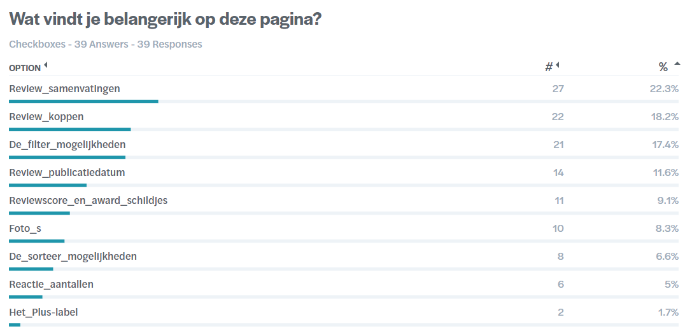
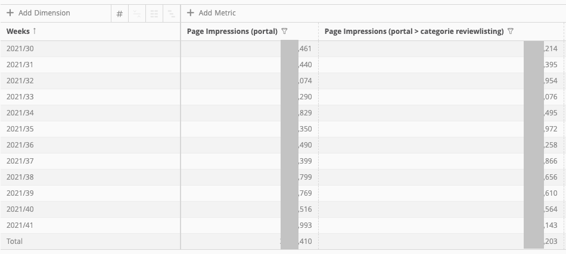
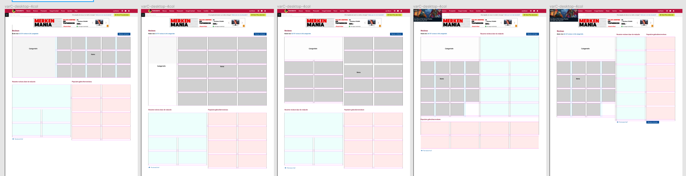
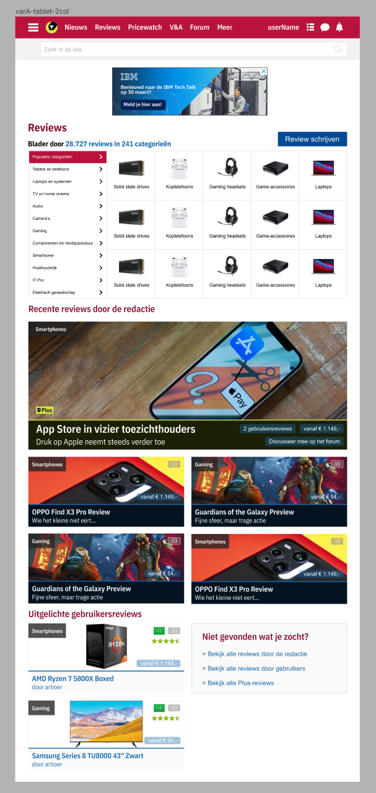
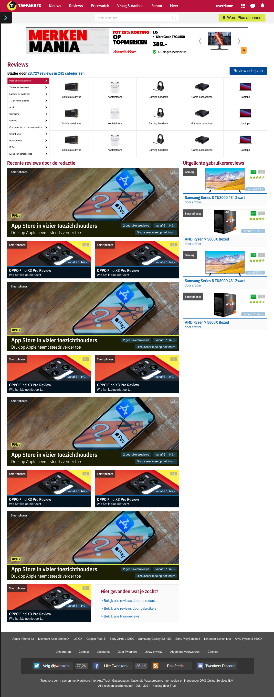
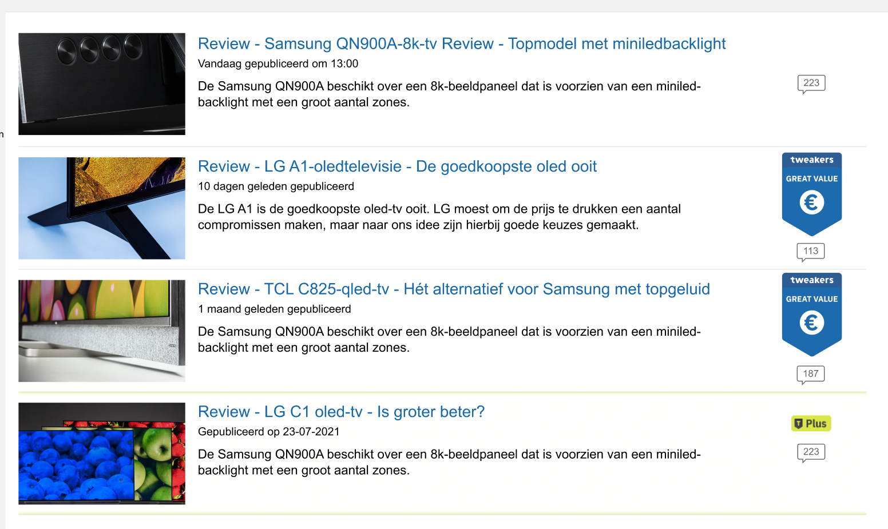
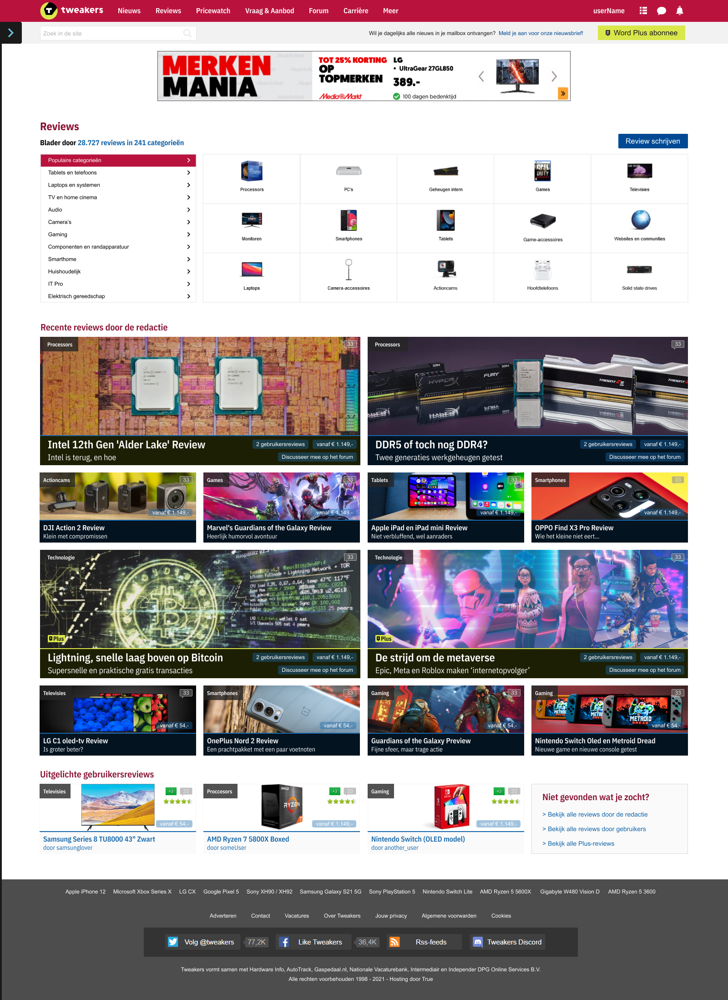

Tweakers
Background
Voor mijn stage bij Tweakers mocht ik meewerken aan het redesign van het review portaal en de review listing. Het redesign werkt met een responsive grid van maximaal 4 kolommen dus het was even goed puzzelen en experimenteren hoe we de verschillende elementen zouden laten zien. We hebben hierbij is ook gebruik gemaakt van enquêtes en heb ik gekeken naar de data van de paginaa om te zien waar het meeste mee geinteracteerd wordt.
Overview
Tools
- Miro
- Sketch
- Mopinion
Team
- Myself (UX Design Intern)
- Martina (CRO Specialist)
- Lin (UX Designer)
Challenges
- Reduce Customer Support workload
- Increasing discoverability of the FAQ
Impact
- Amount of CS tickets submitted reduced by 10%
Probleem
Tijdens mijn stage was mijn stagebegeider en UX Designer bezig met een redesign van Tweakers. Ik mocht mij bezig houden met het redesignen van het zogenaamde review portaal en de review listings. Daarbij moest ik rekening houden met het nieuwe design system en grid dat mijn stagebegeleider heeft ontworpen, maar ook met het gedrag en voorkeuren van gebruikers en de responsiveness voor kleinere schermformaten.
Onderzoek
Om te bepalen welke content de prioriteit krijgt in het nieuwe redesign hebben we een aantal enquêtes opgezet waarbij gebruikers gevraagd werden wat zij het belangrijkst vinden in de huidige situatie. Ook heb ik samen met de product owner gekeken naar waar gebruikers echt op klikken op de pagina om tot een data-driven design te komen.
 Schetsen & prototypes
Mijn design begon lo-fi, in het begin was ik vooral nog aan het zoeken en experimenteren naar de juiste compositie en keek ik wat er mogelijk was met het grid.
Naast een widescreen-formaat van 4 kolommen breed, moest ik ontwerpen voor kleinere schermen (3 kolommen), tablets (2 kolommen) en mobiel (1 kolom breed). De grootste uitdaging was het vinden van een ontwerp dat op alle schermformaten er goed gebalanceerd uit zag.
  Eindresultaat
Uiteindelijk heb ik mijn designs gevuld met echte content en was het team tevreden over het eindresultaat. Het gaf veel voldoening om een bijdrage te leveren aan het redesign van Tweakers en hopelijk zie ik in de toekomst mijn werk terug op de website.

Reflectie
Dit was een kleinere opdracht die mij goed liet zien hoe je met onderzoek en data je ontwerpkeuzes richting geeft en onderbouwt. Verder was het voor mij ook een goede uitdaging om responsive designs te ontwerpen, met veel iteraties en feedbacksessies met het team waardoor ik uiteindelijk uitkwam bij een mooi eindresultaat.